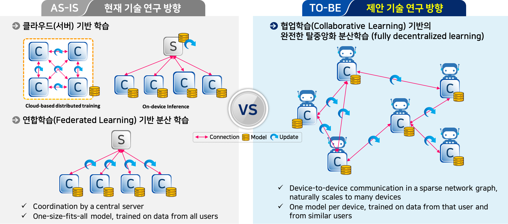
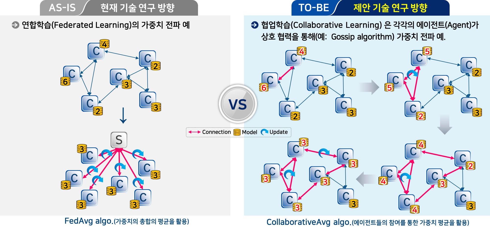
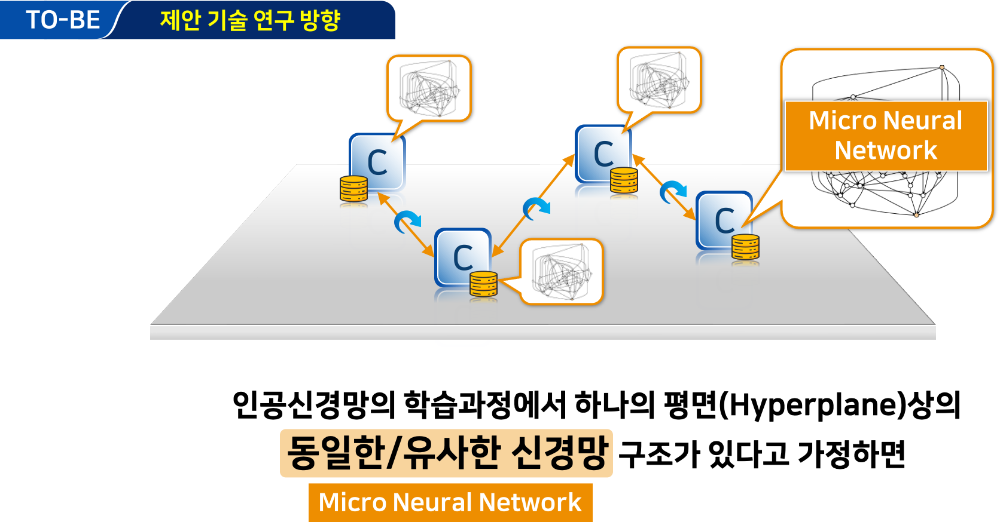
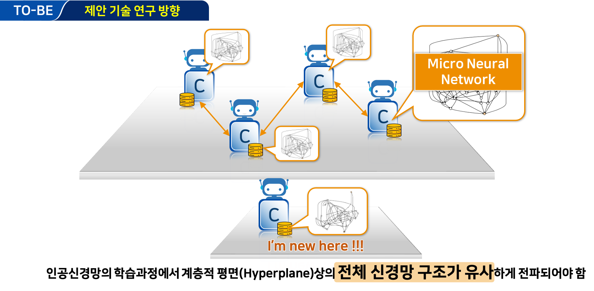
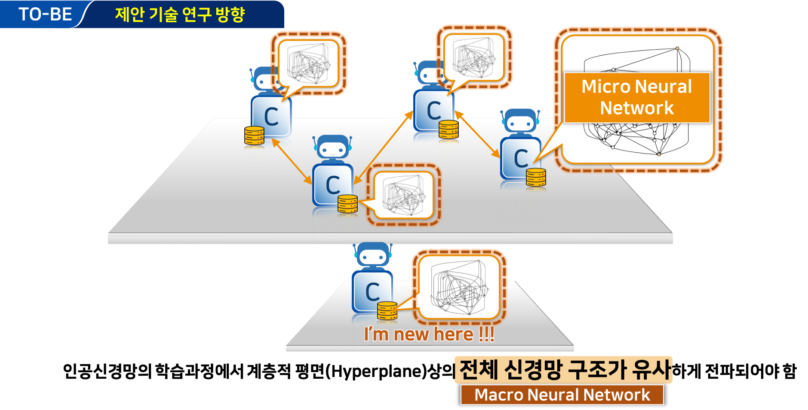
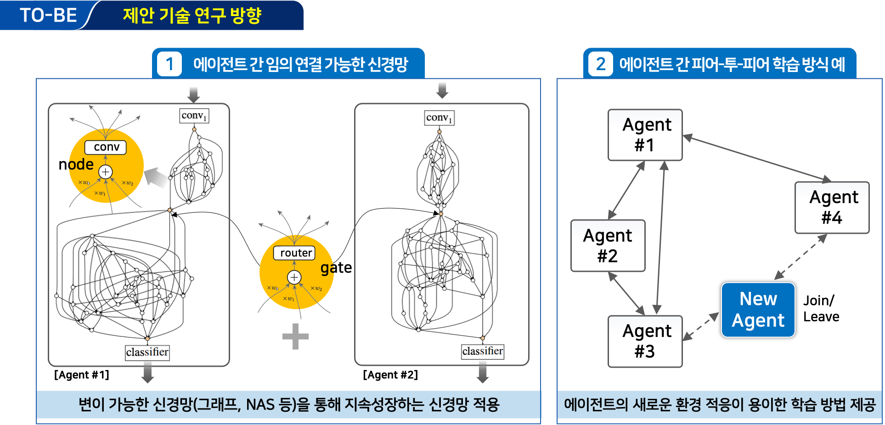
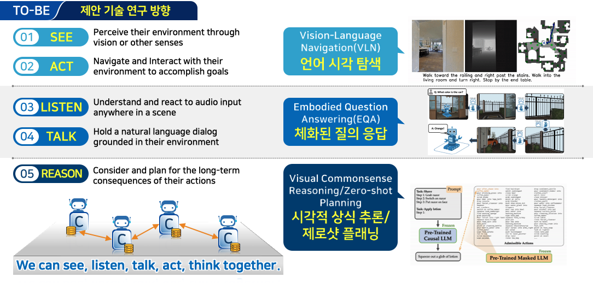
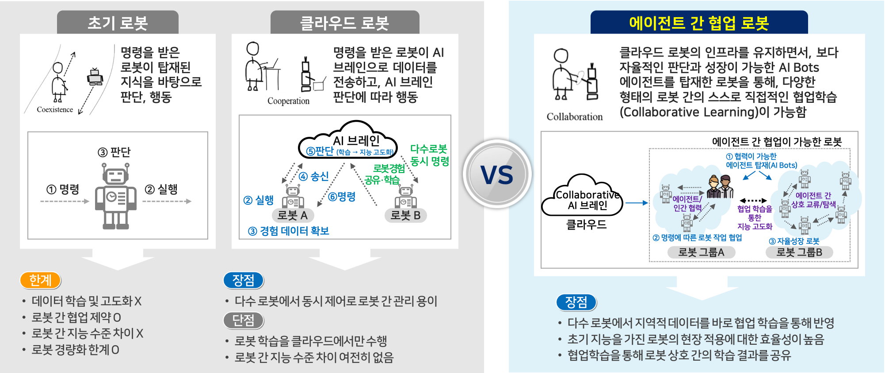

연구배경(Background)
[기존연구동향] 점차 클라우드 기반 학습 방식에서 다양한 디바이스가 학습이 가능한 연합학습(Federated Learning)으로 발전하고 있음.
- 클라우드 기반 학습: 전통적인 클라우드 기반의 서버팜에서 학습을 하고, 제작된 모델을 통해 서버 기반으로 추론하는 방식임.
- 연합학습 기반 학습: 중앙집중적인 관리가 필요하지만, 데이터가 인접한 다양한 기기에서 직접 훈련에 참여하여 학습 모델의 업데이트와 추론이 가능한 방식임.
[제안연구방향] 점차 클라우드 기반 학습 방식에서 탈피하여, 인공지능이 탑재된 자율체에서 스스로 보고, 듣고, 판단하여 지능을 강화하는 학습 방법 개발
- 피어-투-피어 학습: 탈중앙화된 학습 방식으로 인접한 에이전트가 서로 협력하여, 학습을 수행하는 방식임.


연구내용
[에이전트 협업학습] 인공지능 에이전트(엣지, 로봇, 드론 등)들이 서로 협력하여, 학습 방식을 자동화하는 에이전트화가 가능한 방식임.
- 마이크로/매크로 레벨 학습: 변이 가능한 신경망(그래프, 신경망 구조 탐색, 연속학습의 네트워크 확장 등)에 기반하여 지속성장이 가능한 신경망 구조 채택.
- 피어-투-피어 연결성: 에이전트가 새로운 환경 변화에 보다 순응하기 위한 학습 방식 제공.




[에이전트 협업지능] 인공지능 에이전트(엣지, 로봇, 드론 등)들이 스스로 보고(SEE), 행동하고(ACT), 듣고(LISTEN), 말하고(TALK), 추론(REASON) 가능한 협업 지능 태스크 연구 개발.


연구내용
연구실적(논문/성과홍보/공개SW)
[International Conferences]
[Domestic Conferences]
[Promotions]
[Open SW]
Acknowledgement
This work was supported by Institute for Information &
Communications Technology Promotion (IITP) grant funded
by the Korea government (MSIT) [No.2022-0-00871, Development of AI Autonomy and Knowledge Enhancement for AI Agent Collaboration).].